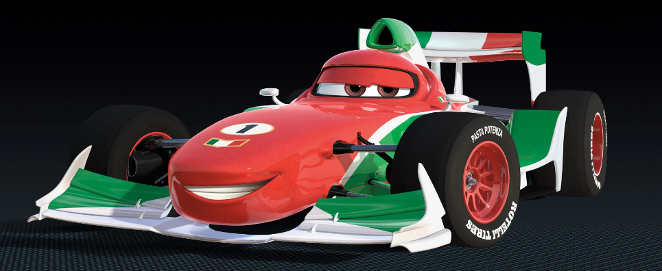

Itália

A Itália, país europeu com uma longa costa mediterrânea, deixou uma marca poderosa na culinária e na cultura ocidentais. A capital, Roma, é sede do Vaticano e abriga obras de arte monumentais e ruínas antigas. Outra cidade importante é Florença, com obras-primas do Renascimento, como o "Davi", de Michelangelo, e o Domo de Brunelleschi. Destacam-se também Veneza, a cidade dos canais, e Milão, capital da moda italiana.
